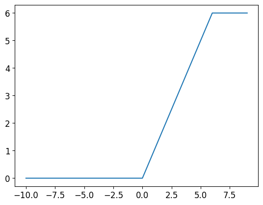

import kaggle
import zipfile
from fastkaggle import *
from fastcore import *
from fastbook import *
from fastcore.all import *
import fastbook
fastbook.setup_book()
import torch
from torch.autograd import Variable
from torch import autograd
import torch.nn as nn
from torchvision import transformstorch.nn
torch.nn 模块
#hide
!nbdev_torch.nn note
Containers（容器）：
nn.Module
一个基本的卷积网络，包含初始化和forward
class Model(nn.Module):
def __init__(self):
super(Model, self).__init__()
self.conv1 = nn.Conv2d(1, 20, 5) # submodule: Conv2d
self.conv2 = nn.Conv2d(20, 20, 5)
def forward(self, x):
x = F.relu(self.conv1(x))
return F.relu(self.conv2(x))可见，其中包含： - __init__ 模型初始化方法 - super(Model, self).__init__() 初始化上一层 - forward 前向传播
add_module(name, module)
将一个 child module 添加到当前 modle。
被添加的module可以通过 name属性来获取。 例：
class Model(nn.Module):
def __init__(self):
super(Model, self).__init__()
self.add_module("conv", nn.Conv2d(10, 20, 4))
# self.conv = nn.Conv2d(10, 20, 4) 和上面这个增加module的方式等价
model = Model()
print(model.conv)Conv2d(10, 20, kernel_size=(4, 4), stride=(1, 1))children()
返回模型子模块的迭代器
model = resnet18()i = 0
for sub_module in model.children():
i += 1
print(sub_module)
if i == 4:
breakConv2d(3, 64, kernel_size=(7, 7), stride=(2, 2), padding=(3, 3), bias=False)
BatchNorm2d(64, eps=1e-05, momentum=0.1, affine=True, track_running_stats=True)
ReLU(inplace=True)
MaxPool2d(kernel_size=3, stride=2, padding=1, dilation=1, ceil_mode=False)cpu(device_id=None)
将所有的模型参数(parameters)和buffers复制到CPU
model = model.cpu()cuda(device_id=None)
将所有的模型参数(parameters)和buffers赋值GPU
参数说明:
device_id (int, optional) – 如果指定的话，所有的模型参数都会复制到指定的设备上。
model = model.cuda()double()
将parameters和buffers的数据类型转换成double。
model = model.double()eval()
将模型设置成evaluation模式
仅仅当模型中有Dropout和BatchNorm是才会有影响。
model = model.eval()若是在模型的非训练阶段（如 evaluation 阶段）未使用 model.eval() 将 model 设置成评估模式，有可能会造成同一样本的多次推断结果不一致的情况
float()
将parameters和buffers的数据类型转换成float。
model = model.float()forward(* input)
定义了每次执行的 计算步骤。 在所有的子类中都需要重写这个函数。
class Model(nn.Module):
def __init__(self):
super(Model, self).__init__()
self.conv1 = nn.Conv2d(1, 20, 5) # submodule: Conv2d
self.conv2 = nn.Conv2d(20, 20, 5)
def forward(self, x):
x = F.relu(self.conv1(x))
return F.relu(self.conv2(x))就是这个forward
half()
将parameters和buffers的数据类型转换成half。
model = model.half()load_state_dict(state_dict)
将state_dict中的parameters和buffers复制到此module和它的后代中。state_dict中的key必须和 model.state_dict()返回的key一致。 NOTE：用来加载模型参数。
参数说明:
state_dict (dict) – 保存parameters和persistent buffers的字典。
model = resnet18()model.load_state_dict(resnet18().state_dict())<All keys matched successfully>modules()
返回一个包含 当前模型 所有模块的迭代器。
class Model(nn.Module):
def __init__(self):
super(Model, self).__init__()
self.add_module("conv", nn.Conv2d(10, 20, 4))
self.add_module("conv1", nn.Conv2d(20, 10, 4))
model = Model()for module in model.modules():
print(module)
print('-------------CUTTHERE---------------')Model(
(conv): Conv2d(10, 20, kernel_size=(4, 4), stride=(1, 1))
(conv1): Conv2d(20, 10, kernel_size=(4, 4), stride=(1, 1))
)
-------------CUTTHERE---------------
Conv2d(10, 20, kernel_size=(4, 4), stride=(1, 1))
-------------CUTTHERE---------------
Conv2d(20, 10, kernel_size=(4, 4), stride=(1, 1))
-------------CUTTHERE---------------可以看见，它输出了所有的模块
重复的模块只被返回一次(children()也是)
class Model(nn.Module):
def __init__(self):
super(Model, self).__init__()
submodule = nn.Conv2d(10, 20, 4)
self.add_module('conv1', submodule)
self.add_module('cv2', submodule)
self.add_module('cv20', submodule)model = Model()for module in model.modules():
print(module)
print('-------------CUTTHERE---------------')Model(
(conv1): Conv2d(10, 20, kernel_size=(4, 4), stride=(1, 1))
(cv2): Conv2d(10, 20, kernel_size=(4, 4), stride=(1, 1))
(cv20): Conv2d(10, 20, kernel_size=(4, 4), stride=(1, 1))
)
-------------CUTTHERE---------------
Conv2d(10, 20, kernel_size=(4, 4), stride=(1, 1))
-------------CUTTHERE---------------named_children()
返回 包含 模型当前子模块 的迭代器，yield 模块名字和模块本身。
for name, module in model.named_children():
# if name in ['conv4', 'conv5']:
print(name, module)conv1 Conv2d(10, 20, kernel_size=(4, 4), stride=(1, 1))parameters(memo=None)
返回一个 包含模型所有参数 的迭代器。
一般用来当作optimizer的参数。
model = Model()for i in model.parameters():
print(type(i.data), i.size())<class 'torch.Tensor'> torch.Size([20, 10, 4, 4])
<class 'torch.Tensor'> torch.Size([20])state_dict(destination=None, prefix=’’)[source]
返回一个字典，保存着module的所有状态（state）。
parameters和persistent buffers都会包含在字典中，字典的key就是parameter和buffer的 names。
例子：
class Model(nn.Module):
def __init__(self):
super(Model, self).__init__()
self.conv2 = nn.Linear(1, 2)
self.vari = Variable(torch.rand([1]))
self.par = nn.Parameter(torch.rand([1]))
self.register_buffer("buffer", torch.randn([2, 3]))
def forward(self, x):
x = self.conv2(x)
return x
model = Model()
print(model.state_dict()) # .keys())OrderedDict([('par', tensor([0.4542])), ('buffer', tensor([[ 2.1136, 0.1283, 0.4152],
[ 1.4492, -0.8829, 0.0859]])), ('conv2.weight', tensor([[-0.0936],
[ 0.7408]])), ('conv2.bias', tensor([-0.8880, -0.3095]))])NOTE：.keys():显示OrderedDict的key
print(model.state_dict().keys())odict_keys(['par', 'buffer', 'conv2.weight', 'conv2.bias'])train(mode=True)
将module设置为 training mode。
仅仅当模型中有Dropout和BatchNorm是才会有影响。
zero_grad()
将module中的所有模型参数的梯度设置为0.
model.zero_grad()class torch.nn.Sequential(* args)
一个时序容器。Modules 会以他们传入的顺序被添加到容器中。当然，也可以传入一个OrderedDict。
model = nn.Sequential(
nn.Conv2d(1, 20, 5),
nn.ReLU(),
nn.Conv2d(20, 64, 5),
nn.ReLU()
)
# Example of using Sequential with OrderedDict
model = nn.Sequential(OrderedDict([
('conv1', nn.Conv2d(1, 20, 5)),
('relu1', nn.ReLU()),
('conv2', nn.Conv2d(20, 64, 5)),
('relu2', nn.ReLU())
]))modelSequential(
(conv1): Conv2d(1, 20, kernel_size=(5, 5), stride=(1, 1))
(relu1): ReLU()
(conv2): Conv2d(20, 64, kernel_size=(5, 5), stride=(1, 1))
(relu2): ReLU()
)class torch.nn.ModuleList(modules=None)
将submodules保存在一个list中。
ModuleList可以像一般的Python list一样被索引。而且ModuleList中包含的modules已经被正确的注册，对所有的module method可见。
class MyModule(nn.Module):
def __init__(self):
super(MyModule, self).__init__()
self.linears = nn.ModuleList([nn.Linear(10, 10) for i in range(10)])
def forward(self, x):
# ModuleList can act as an iterable, or be indexed using ints
for i, l in enumerate(self.linears):
x = self.linears[i // 2](x) + l(x)
return xmodel = MyModule()for module in model.modules():
print(module)
print('-------------CUTTHERE---------------')MyModule(
(linears): ModuleList(
(0): Linear(in_features=10, out_features=10, bias=True)
(1): Linear(in_features=10, out_features=10, bias=True)
(2): Linear(in_features=10, out_features=10, bias=True)
(3): Linear(in_features=10, out_features=10, bias=True)
(4): Linear(in_features=10, out_features=10, bias=True)
(5): Linear(in_features=10, out_features=10, bias=True)
(6): Linear(in_features=10, out_features=10, bias=True)
(7): Linear(in_features=10, out_features=10, bias=True)
(8): Linear(in_features=10, out_features=10, bias=True)
(9): Linear(in_features=10, out_features=10, bias=True)
)
)
-------------CUTTHERE---------------
ModuleList(
(0): Linear(in_features=10, out_features=10, bias=True)
(1): Linear(in_features=10, out_features=10, bias=True)
(2): Linear(in_features=10, out_features=10, bias=True)
(3): Linear(in_features=10, out_features=10, bias=True)
(4): Linear(in_features=10, out_features=10, bias=True)
(5): Linear(in_features=10, out_features=10, bias=True)
(6): Linear(in_features=10, out_features=10, bias=True)
(7): Linear(in_features=10, out_features=10, bias=True)
(8): Linear(in_features=10, out_features=10, bias=True)
(9): Linear(in_features=10, out_features=10, bias=True)
)
-------------CUTTHERE---------------
Linear(in_features=10, out_features=10, bias=True)
-------------CUTTHERE---------------
Linear(in_features=10, out_features=10, bias=True)
-------------CUTTHERE---------------
Linear(in_features=10, out_features=10, bias=True)
-------------CUTTHERE---------------
Linear(in_features=10, out_features=10, bias=True)
-------------CUTTHERE---------------
Linear(in_features=10, out_features=10, bias=True)
-------------CUTTHERE---------------
Linear(in_features=10, out_features=10, bias=True)
-------------CUTTHERE---------------
Linear(in_features=10, out_features=10, bias=True)
-------------CUTTHERE---------------
Linear(in_features=10, out_features=10, bias=True)
-------------CUTTHERE---------------
Linear(in_features=10, out_features=10, bias=True)
-------------CUTTHERE---------------
Linear(in_features=10, out_features=10, bias=True)
-------------CUTTHERE---------------append(module)
等价于 list 的 append()
参数说明:
module (nn.Module) – 要 append 的module
list0.append(nn.Linear(1, 10))ModuleList(
(0): Linear(in_features=1, out_features=10, bias=True)
(1): Linear(in_features=1, out_features=10, bias=True)
(2): Linear(in_features=1, out_features=10, bias=True)
(3): Linear(in_features=1, out_features=10, bias=True)
(4): Linear(in_features=1, out_features=10, bias=True)
(5): Linear(in_features=1, out_features=10, bias=True)
(6): Linear(in_features=1, out_features=10, bias=True)
(7): Linear(in_features=1, out_features=10, bias=True)
(8): Linear(in_features=1, out_features=10, bias=True)
)extend(modules)
等价于 list 的 extend() 方法
参数说明:
modules (list) – list of modules to append
list0 = nn.ModuleList([nn.Linear(1, 10)])list0ModuleList(
(0): Linear(in_features=1, out_features=10, bias=True)
)list0.extend([nn.Linear(1, 10), nn.Linear(1, 10)])ModuleList(
(0): Linear(in_features=1, out_features=10, bias=True)
(1): Linear(in_features=1, out_features=10, bias=True)
(2): Linear(in_features=1, out_features=10, bias=True)
)extend输入迭代器/列表等，append输入一个数据
卷积层
class torch.nn.Conv1d
- in_channels(int)
- 输入信号的通道(比如RGB)
- out_channels(int)
- 卷积产生的通道（比如六个通道）
- kerner_size(int or tuple)
- 卷积核的尺寸
- stride(int or tuple, optional)
- 卷积步长（用来节省计算量）
- padding (int or tuple, optional)
- 输入的每一条边补充0的层数（补充边缘）
- dilation(int or tuple, `optional``)
- 卷积核元素之间的间距（空洞卷积）
- groups(int, optional)
- 从输入通道到输出通道的阻塞连接数（控制输入和输出之间的连接， group=1，输出是所有的输入的卷积；group=2，此时相当于有并排的两个卷积层，每个卷积层计算输入通道的一半，并且产生的输出是输出通道的一半，随后将这两个输出连接起来。）
- bias(bool, optional) - 如果bias=True，添加偏置
m = nn.Conv1d(16, 33, 3, stride=2)
input0 = torch.autograd.Variable(torch.randn(1, 16, 3))
output = m(input0)注意：对于一组图片，会产生一组输出
图片叠加在第一维度
比如torch.randn(10, 16, 3)在这里相当于十张大小为长3通道16的图片
output.size()torch.Size([1, 33, 1])nn.Conv2d,3d同理，只有卷积核尺寸不同
class torch.nn.ConvTranspose1d
1维的解卷积（转置卷积）操作（transposed convolution operator，注意改视作操作可视作解卷积操作，但并不是真正的解卷积操作） 该模块可以看作是Conv1d相对于其输入的梯度，有时（但不正确地）被称为解卷积操作。
很显然，它会丢失信息，并且会产生棋盘格伪影
输入：
class torch.nn.ConvTranspose2d(in_channels, out_channels, kernel_size, stride=1, padding=0, output_padding=0, groups=1, bias=True)
- in_channels(int) – 输入信号的通道数
- out_channels(int) – 卷积产生的通道
- kernel_size(int or tuple) - 卷积核的大小
- stride(int or tuple, optional) - 卷积步长
- padding(int or tuple, optional) - 输入的每一条边补充0的层数
- output_padding(int or tuple, optional) - 输出的每一条边补充0的层数
- dilation(int or tuple, optional) – 卷积核元素之间的间距
- groups(int, optional) – 从输入通道到输出通道的阻塞连接数
- bias(bool, optional) - 如果bias=True，添加偏置
im = PILImage.create(imgpath[0])data = untar_data(URLs.PETS)
imgpath = get_image_files(data/'images')
img = ToTensor()(PILImage.create(imgpath[0]))
img = img.float()
img = img.unsqueeze(0)创建一个卷积核
conv = nn.Conv2d(3, 1, 3, 2)
imgc = conv(img)
imga = array(imgc.detach())
plt.imshow(imga[0][0])<matplotlib.image.AxesImage>转置卷积
convt = nn.ConvTranspose2d(1, 3, 3, 2)imgc.size()torch.Size([1, 1, 187, 249])imgc[0].size()torch.Size([1, 187, 249])imgt = convt(imgc[0])imgt = imgt*255imgt = imgt.int()imgt = array(imgt.detach())tim = transforms.ToPILImage()tim(imgc[0])正常来说用不到这个）
池化层
nn.MaxPool1d
最大池化
- kernel_size(int or tuple) - max pooling的窗口大小
- stride(int or tuple, optional) - max pooling的窗口移动的步长。默认值是kernel_size
- padding(int or tuple, optional) - 输入的每一条边补充0的层数
- dilation(int or tuple, optional) – 一个控制窗口中元素步幅的参数
- return_indices - 如果等于True，会返回输出最大值的序号，对于上采样操作会有帮助
- ceil_mode - 如果等于True，计算输出信号大小的时候，会使用向上取整，代替默认的向下取整的操作
nn.AvgPool1d
平均池化
nn.FractionalMaxPool2d
分数最大化池化
- kernel_size(int or tuple) - 最大池化操作时的窗口大小。可以是一个数字（表示KK的窗口），也可以是一个元组（khkw）
- output_size - 输出图像的尺寸。可以使用一个tuple指定(oH,oW)，也可以使用一个数字oH指定一个oH*oH的输出。
- output_ratio – 将输入图像的大小的百分比指定为输出图片的大小，使用一个范围在(0,1)之间的数字指定
- return_indices - 默认值False，如果设置为True，会返回输出的索引，索引对 nn.MaxUnpool2d有用。
也就是说，它可以对任意大小的东西进行最大池化，并输出相同/相同比例大小的图片
有点像最近邻采样
nn.LPPool2d
二维幂平均池化
也就是一个结合了最大池化和平均池化的方法
m = nn.LPPool2d(p, (3, 2), stride=(2, 1))
- 当p为无穷大的时候时，等价于最大池化操作 - 当p=1时，等价于平均池化操作
nn.AdaptiveMaxPool2d
自适应最大池化
- output_size: 输出信号的尺寸,可以用（H,W）表示HW的输出，也可以使用数字H表示HH大小的输出
- return_indices: 如果设置为True，会返回输出的索引。对 nn.MaxUnpool2d有用，默认值是False
Non-Linear Activations 非线性激活函数
激活函数是用来增加网络非线性的
常用的有relu,sigmoid,softmax
torch.nn.ReLU
线性整流单元(也就是把小于零的变成0）
\({ReLU}(x)= max(0, x)\)
x = torch.arange(-10, 10)
y = nn.ReLU()(x)
plt.plot(x, y);nn.ReLU6
对输入的每一个元素运用函数
\({ReLU6}(x) = min(max(0,x), 6)\)
也就是把小于0的变成0,大于6的变成6
x = torch.arange(-10, 10)
y = nn.ReLU6()(x)
plt.plot(x, y);
nn.ELU
对输入的每一个元素运用函数
\(f(x) = max(0,x) + min(0, alpha * (e^x - 1))\)
x = torch.linspace(-10, 10, 100)
y = nn.ELU(10)(x)
plt.plot(x, y);也就是对于0以下的，使用e**x，对于0以上的，使用普通的ReLU
nn.PReLU
对输入的每一个元素运用函数\(PReLU(x) = max(0,x) + a * min(0,x)\)
a是一个可学习参数。当没有声明时，nn.PReLU()在所有的输入中只有一个参数a；如果是nn.PReLU(nChannels)，a将应用到每个输入。
- num_parameters=1 -需要学习的a的个数
- init=0.25 -a的默认值
x = torch.linspace(-10, 10, 1000)
y = nn.PReLU(num_parameters=1, init=-1)(x).detach().numpy()
plt.plot(x, y);也就是说，这是一个在负值上进行y=ax，正值进行y=x的函数
不要对a使用权重衰减
nn.LeakyReLU
- negative_slope：控制负斜率的角度，默认等于0.01
- inplace-选择是否进行覆盖运算
对输入的每一个元素运用\(f(x) = max(0, x) + {negative_slope} * min(0, x)\)
x = torch.linspace(-10, 10, 1000)
y = nn.LeakyReLU(-1)(x).detach().numpy()
plt.plot(x, y);
与PReLU差不多，但是a固定
nn.Threshold
- threshold：阈值
- value：输入值小于阈值则会被value代替
- inplace：选择是否进行覆盖运算
x = torch.linspace(-10, 10, 1000)
y = nn.Threshold(threshold=2, value=3)(x).detach().numpy()
plt.plot(x, y);相当于ReLU的泛化
nn.Hardtanh
- min_val：线性区域范围最小值
- max_val：线性区域范围最大值
- inplace：选择是否进行覆盖运算
x = torch.linspace(-10, 10, 1000)
y = nn.Hardtanh(min_val=-1, max_val=2)(x).detach().numpy()
plt.plot(x, y);虽然带有tanh,但和tan没什么关系。它就相当于ReLU6的泛化
nn.Sigmoid
\[f ( x ) = 1 / ( 1 + e − x )\]
x = torch.linspace(-10, 10, 1000)
y = nn.Sigmoid()(x).detach().numpy()
plt.plot(x, y);nn.Tanh
\[f ( x ) = (e^x − e^x) / (e^x + e^x)\]
x = torch.linspace(-10, 10, 1000)
y = nn.Tanh()(x).detach().numpy()
plt.plot(x, y);其实和sigmoid挺像的，不过更窄一点
nn.LogSigmoid
\[LogSigmoid(x) = log( 1 / ( 1 + e^{-x}))\]
x = torch.linspace(-10, 10, 1000)
y = nn.LogSigmoid()(x).detach().numpy()
plt.plot(x, y);
也就是sigmoid的对数
nn.Softplus
\[f ( x ) = \frac{1}{beta}∗log(1+e(beta∗xi))\]
- beta：Softplus函数的beta值(默认为1)
- threshold：阈值(i)(默认为20）
x = torch.linspace(-10, 10, 1000)
y = nn.Softplus(beta=1, threshold=20)(x).detach().numpy()
plt.plot(x, y);Softplus函数是ReLU函数的平滑逼近
nn.Softshrink
\[f ( x ) = x − lambda , if x > lambda f ( x ) = x + lambda , if x < −lambda f(x)=0,otherwise\]
x = torch.linspace(-10, 10, 1000)
y = nn.Softshrink(lambd=6)(x).detach().numpy()
plt.plot(x, y);如你所见，中间的台阶大小是12
nn.Softsign
\[f(x) = x / (1 + |x|)\]
x = torch.linspace(-100, 100, 1000)
y = nn.Softsign()(x).detach().numpy()
plt.plot(x, y);nn.Tanhshrink
\[Tanhshrink ( x ) = x − Tanh ( x )\]
x = torch.linspace(-10, 10, 1000)
y = nn.Tanhshrink()(x).detach().numpy()
plt.plot(x, y);nn.Softmin
它对n维输入张量运用Softmin函数，将张量的每个元素缩放到（0,1）区间且和为1。
m = nn.Softmin(dim=0)
input0 = torch.autograd.Variable(torch.arange(0, 20).reshape(5, 4).float())
print(input0)
print(m(input0))tensor([[ 0., 1., 2., 3.],
[ 4., 5., 6., 7.],
[ 8., 9., 10., 11.],
[12., 13., 14., 15.],
[16., 17., 18., 19.]])
tensor([[9.8168e-01, 9.8168e-01, 9.8168e-01, 9.8168e-01],
[1.7980e-02, 1.7980e-02, 1.7980e-02, 1.7980e-02],
[3.2932e-04, 3.2932e-04, 3.2932e-04, 3.2932e-04],
[6.0317e-06, 6.0317e-06, 6.0317e-06, 6.0317e-06],
[1.1047e-07, 1.1047e-07, 1.1047e-07, 1.1047e-07]])nn.Softmax
和Softmin”相反“
m = nn.Softmax(dim=0)
input0 = torch.autograd.Variable(torch.arange(0, 20).reshape(5, 4).float())
print(input0)
print(m(input0))tensor([[ 0., 1., 2., 3.],
[ 4., 5., 6., 7.],
[ 8., 9., 10., 11.],
[12., 13., 14., 15.],
[16., 17., 18., 19.]])
tensor([[1.1047e-07, 1.1047e-07, 1.1047e-07, 1.1047e-07],
[6.0317e-06, 6.0317e-06, 6.0317e-06, 6.0317e-06],
[3.2932e-04, 3.2932e-04, 3.2932e-04, 3.2932e-04],
[1.7980e-02, 1.7980e-02, 1.7980e-02, 1.7980e-02],
[9.8168e-01, 9.8168e-01, 9.8168e-01, 9.8168e-01]])nn.LogSoftmax
m = nn.LogSoftmax(dim=0)
input0 = torch.autograd.Variable(torch.arange(0, 20).reshape(5, 4).float())
print(input0)
print(m(input0))tensor([[ 0., 1., 2., 3.],
[ 4., 5., 6., 7.],
[ 8., 9., 10., 11.],
[12., 13., 14., 15.],
[16., 17., 18., 19.]])
tensor([[-16.0185, -16.0185, -16.0185, -16.0185],
[-12.0185, -12.0185, -12.0185, -12.0185],
[ -8.0185, -8.0185, -8.0185, -8.0185],
[ -4.0185, -4.0185, -4.0185, -4.0185],
[ -0.0185, -0.0185, -0.0185, -0.0185]])Normalization layers 标准化层
nn.BatchNorm2d
num_features, eps=1e-05, momentum=0.1, affine=True
对小批量(mini-batch)3d数据组成的4d输入进行批标准化(Batch Normalization)操作
- num_features： 来自期望输入的特征数，该期望输入的大小为’batch_size x num_features x height x width’
- eps： 为保证数值稳定性（分母不能趋近或取0）,给分母加上的值。默认为1e-5。
- momentum： 动态均值和动态方差所使用的动量。默认为0.1。
- affine： 一个布尔值，当设为true，给该层添加可学习的仿射变换参数。
# With Learnable Parameters
m = nn.BatchNorm2d(100)# Without Learnable Parameters
m = nn.BatchNorm2d(100, affine=False)input0 = torch.autograd.Variable(torch.rand(20, 100, 35, 45))
mean = input0.mean()
std = input0.var()
print(std, var)
input0 = m(input0)
mean = input0.mean()
std = input0.var()
print(std, var)tensor(0.0833) tensor(0.9999, grad_fn=<VarBackward0>)
tensor(0.9999, grad_fn=<VarBackward0>) tensor(0.9999, grad_fn=<VarBackward0>)也就是把平均值变成1,标准差变成1
Recurrent layers 循环层
恭喜你看到了这里！这里是循环神经网络（RNN）
nn.RNN(args, *kwargs)
这只是一个几层全连接和激活函数组成的简单RNN而已……
它是层啊……那没事了
将一个多层的 Elman RNN，激活函数为tanh或者ReLU，用于输入序列。
对输入序列中每个元素，RNN每层的计算公式为 \[ h_t=tanh(w_{ih} x_t+b_{ih}+w_{hh} h_{t-1}+b_{hh}) \] \(h_t\)是时刻\(t\)的隐状态。 \(x_t\)是上一层时刻\(t\)的隐状态，或者是第一层在时刻\(t\)的输入。如果nonlinearity=‘relu’,那么将使用relu代替tanh作为激活函数。
参数
input_size – 输入x的特征数量。
hidden_size – 隐层的特征数量。
num_layers – RNN的层数。
nonlinearity – 指定非线性函数使用tanh还是relu。默认是tanh。
bias – 如果是False，那么RNN层就不会使用偏置权重 \(b_ih\)和\(b_hh\),默认是True
batch_first – 如果True的话，那么输入Tensor的shape应该是[batch_size, time_step, feature],输出也是这样。
dropout – 如果值非零，那么除了最后一层外，其它层的输出都会套上一个dropout层。
bidirectional – 如果True，将会变成一个双向RNN，默认为False。
输入 (input, h_0)
input(seq_len, batch, input_size): 保存输入序列特征的tensor。
input可以是被填充的变长的序列。细节请看torch.nn.utils.rnn.pack_padded_sequence()
- h_0(num_layers * num_directions, batch, hidden_size): 保存着初始隐状态的tensor
输出 (output, h_n)
- output (seq_len, batch, hidden_size * num_directions): 保存着RNN最后一层的输出特征。如果输入是被填充过的序列，那么输出也是被填充的序列。
- h_n (num_layers * num_directions, batch, hidden_size): 保存着最后一个时刻隐状态。
属性
weight_ih_l[k] – 第k层的 input-hidden 权重， 可学习，形状是(input_size x hidden_size)。
weight_hh_l[k] – 第k层的 hidden-hidden 权重， 可学习，形状是(hidden_size x hidden_size)
bias_ih_l[k] – 第k层的 input-hidden 偏置， 可学习，形状是(hidden_size)
bias_hh_l[k] – 第k层的 hidden-hidden 偏置， 可学习，形状是(hidden_size)
示例
建立一个RNN
#rnn = nn.RNN(10, 30, 1)rnn = nn.RNN(1, 1, 1)生成假数据：
input0为时间序列
h0为第一份输入
input0 = Variable(torch.arange(0, 100).reshape(100, 1, -1).float())
h0 = input0[0]网络的内容
rnn.zero_grad()
for i in rnn.parameters():
print(i.grad)
#i.data.add_(-1, i.grad.data)tensor([[0.]])
tensor([[0.]])
tensor([0.])
tensor([0.])output, hn = rnn(input0[1], h0)outputtensor([[-1.0000]], grad_fn=<SqueezeBackward1>)input0[1]tensor([[1.]])hntensor([[-0.4810]], grad_fn=<SqueezeBackward1>)nn.LSTM
长短期记忆
将一个多层的 (LSTM) 应用到输入序列。
对输入序列的每个元素，LSTM的每层都会执行以下计算：
\[ \begin{aligned} i_t &= sigmoid(W_{ii}x_t+b_{ii}+W_{hi}h_{t-1}+b_{hi}) \ f_t &= sigmoid(W_{if}x_t+b_{if}+W_{hf}h_{t-1}+b_{hf}) \ o_t &= sigmoid(W_{io}x_t+b_{io}+W_{ho}h_{t-1}+b_{ho})\ g_t &= tanh(W_{ig}x_t+b_{ig}+W_{hg}h_{t-1}+b_{hg})\ c_t &= f_tc_{t-1}+i_tg_t\ h_t &= o_t*tanh(c_t) \end{aligned} \]
\(h_t\)是时刻\(t\)的隐状态,\(c_t\)是时刻\(t\)的细胞状态，\(x_t\)是上一层的在时刻\(t\)的隐状态或者是第一层在时刻\(t\)的输入。\(i_t, f_t, g_t, o_t\) 分别代表 输入门，遗忘门，细胞和输出门。
其实这东西不看也没什么关系的
参数
input_size – 输入的特征维度
hidden_size – 隐状态的特征维度
num_layers – 层数（和时序展开要区分开）
bias – 如果为False，那么LSTM将不会使用\(b_{ih},b_{hh}\)，默认为True。
batch_first – 如果为True，那么输入和输出Tensor的形状为(batch, seq, feature)
dropout – 如果非零的话，将会在RNN的输出上加个dropout，最后一层除外。
bidirectional – 如果为True，将会变成一个双向RNN，默认为False。
输入: input, (h_0, c_0)
input (seq_len, batch, input_size): 包含输入序列特征的Tensor。也可以是packed variable。
h_0 (num_layers * num_directions, batch, hidden_size):保存着batch中每个元素的初始化隐状态的Tensor
c_0 (num_layers * num_directions, batch, hidden_size): 保存着batch中每个元素的初始化细胞状态的Tensor
输出:output, (h_n, c_n)
output (seq_len, batch, hidden_size * num_directions): 保存RNN最后一层的输出的Tensor。 如果输入是torch.nn.utils.rnn.PackedSequence，那么输出也是torch.nn.utils.rnn.PackedSequence。
h_n (num_layers * num_directions, batch, hidden_size): Tensor，保存着RNN最后一个时间步的隐状态。
c_n (num_layers * num_directions, batch, hidden_size): Tensor，保存着RNN最后一个时间步的细胞状态。
属性
weight_ih_l[k] – 第k层可学习的input-hidden权重(\(W_{ii}|W_{if}|W_{ig}|W_{io}\))，形状为(input_size x 4*hidden_size)
weight_hh_l[k] – 第k层可学习的hidden-hidden权重(\(W_{hi}|W_{hf}|W_{hg}|W_{ho}\))，形状为(hidden_size x 4*hidden_size)。
bias_ih_l[k] – 第k层可学习的input-hidden偏置(\(b_{ii}|b_{if}|b_{ig}|b_{io}\))，形状为( 4*hidden_size)
bias_hh_l[k] – 第k层可学习的hidden-hidden偏置(\(b_{hi}|b_{hf}|b_{hg}|b_{ho}\))，形状为( 4*hidden_size)。
lstm = nn.LSTM(10, 20, 2)
input0 = Variable(torch.randn(5, 3, 10))
h0 = Variable(torch.randn(2, 3, 20))
c0 = Variable(torch.randn(2, 3, 20))
output, hn = lstm(input0, (h0, c0))output.size()torch.Size([5, 3, 20])hn[0].size()torch.Size([2, 3, 20])nn.GRU
与LSTM相比，GRU内部少了一个”门控“，参数比LSTM少，但是却也能够达到与LSTM相当的功能。
将一个多层的GRU用于输入序列。
对输入序列中的每个元素，每层进行了一下计算：
\[ \begin{aligned} r_t&=sigmoid(W_{ir}x_t+b_{ir}+W_{hr}h_{(t-1)}+b_{hr})\ i_t&=sigmoid(W_{ii}x_t+b_{ii}+W_{hi}h_{(t-1)}+b_{hi})\ n_t&=tanh(W_{in}x_t+b_{in}+rt(W_{hn}h_{(t-1)}+b_{hn}))\ h_t&=(1-i_t) nt+i_t*h(t-1) \end{aligned} \] \(h_t\)是是时间\(t\)的上的隐状态，\(x_t\)是前一层\(t\)时刻的隐状态或者是第一层的\(t\)时刻的输入，\(r_t, i_t, n_t\)分别是重置门，输入门和新门。
示例：
rnn = nn.GRU(10, 20, 2)
input0 = Variable(torch.randn(5, 3, 10))
h0 = Variable(torch.randn(2, 3, 20))
output, hn = rnn(input0, h0)output.size()torch.Size([5, 3, 20])hn.size()torch.Size([2, 3, 20])nn.RNNCell
将一个多层的 Elman RNNCell，激活函数为tanh或者ReLU，应用于输入序列。公式： \[ h'=tanh(w_{ih} x+b_{ih}+w_{hh} h+b_{hh}) \] 如果nonlinearity=relu，那么将会使用ReLU来代替tanh。
参数
input_size – 输入\(x\)，特征的维度。
hidden_size – 隐状态特征的维度。
bias – 如果为False，RNN cell中将不会加入bias，默认为True。
nonlinearity – 用于选择非线性激活函数 [tanh|relu]. 默认值为： tanh
输出： h’
- h’ (batch, hidden_size):下一个时刻的隐状态。
属性：
weight_ih – input-hidden 权重， 可学习，形状是(input_size x hidden_size)。
weight_hh – hidden-hidden 权重， 可学习，形状是(hidden_size x hidden_size)
bias_ih – input-hidden 偏置， 可学习，形状是(hidden_size)
bias_hh – hidden-hidden 偏置， 可学习，形状是(hidden_size)
示例
初始化一个（10,20）的rnncell（类似全连接层）
rnn = nn.RNNCell(10, 20)生成随机数据
input0 = Variable(torch.randn(6, 3, 10))
hx = Variable(torch.randn(3, 20))
output = []进行预测
for i in range(6):
hx = rnn(input0[i], hx)
output.append(hx)len(output)6nn.LSTMCell
公式：
\[ \begin{aligned} i &= sigmoid(W_{ii}x+b_{ii}+W_{hi}h+b_{hi}) \ f &= sigmoid(W_{if}x+b_{if}+W_{hf}h+b_{hf}) \ o &= sigmoid(W_{io}x+b_{io}+W_{ho}h+b_{ho})\ g &= tanh(W_{ig}x+b_{ig}+W_{hg}h+b_{hg})\ c' &= f_tc_{t-1}+i_tg_t\ h' &= o_t*tanh(c') \end{aligned} \]
参数
- input_size – 输入的特征维度。
- hdden_size – 隐状态的维度。
- bias – 如果为False，那么将不会使用bias。默认为True。
输入: input, (h_0, c_0)
input (seq_len, batch, input_size): 包含输入序列特征的Tensor。也可以是packed variable
h_0 ( batch, hidden_size):保存着batch中每个元素的初始化隐状态的Tensor
c_0 (batch, hidden_size): 保存着batch中每个元素的初始化细胞状态的Tensor
输出： h_1, c_1
- h_1 (batch, hidden_size): 下一个时刻的隐状态。
- c_1 (batch, hidden_size): 下一个时刻的细胞状态。
属性:
weight_ih – input-hidden权重(\(W_{ii}|W_{if}|W_{ig}|W_{io}\))，形状为(input_size x 4*hidden_size)
weight_hh – hidden-hidden权重(\(W_{hi}|W_{hf}|W_{hg}|W_{ho}\))，形状为(hidden_size x 4*hidden_size)。
bias_ih – input-hidden偏置(\(b_{ii}|b_{if}|b_{ig}|b_{io}\))，形状为( 4*hidden_size)
bias_hh – hidden-hidden偏置(\(b_{hi}|b_{hf}|b_{hg}|b_{ho}\))，形状为( 4*hidden_size)。
例子
rnn = nn.LSTMCell(10, 20)
input0 = Variable(torch.randn(6, 3, 10))
hx = Variable(torch.randn(3, 20))
cx = Variable(torch.randn(3, 20))
output = []
for i in range(6):
hx, cx = rnn(input0[i], (hx, cx))
output.append(hx)nn.GRUCell
同上
rnn = nn.GRUCell(10, 20)
input0 = Variable(torch.randn(6, 3, 10))
hx = Variable(torch.randn(3, 20))
output = []
for i in range(6):
hx = rnn(input0[i], hx)
output.append(hx)Linear layers 线性层
nn.Linear(in_features, out_features, bias=True)
对输入数据做线性变换：\(y = Ax + b\)
参数：
- in_features - 每个输入样本的大小
- out_features - 每个输出样本的大小
- bias - 若设置为False，这层不会学习偏置。默认值：True
形状：
- 输入: (N,in_features)
- 输出： (N,out_features)
属性：
- weight -形状为(out_features x in_features)的模块中可学习的权值
- bias -形状为(out_features)的模块中可学习的偏置
m = nn.Linear(20, 30)
input0 = torch.autograd.Variable(torch.randn(128, 20))
output = m(input0)
print(output.size())torch.Size([128, 30])Dropout layers 丢弃层
nn.Dropout / nn.Dropout2d,3d
随机将输入张量中部分元素设置为0。对于每次前向调用，被置0的元素都是随机的。
参数：
- p - 将元素置0的概率。默认值：0.5
- in-place - 若设置为True，会在原地执行操作。默认值：False
形状：
- 输入： 任意。输入可以为任意形状。
- 输出： 相同。输出和输入形状相同。
例子：
m = nn.Dropout(p=0.2)
input0 = torch.autograd.Variable(torch.randn(20, 16))
output = m(input0)input0.count_nonzero()-output.count_nonzero()tensor(46)Sparse layers 稀疏层（？）词向量产生层（！）
nn.Embedding
一个保存了固定字典和大小的简单查找表。
这个模块常用来保存词嵌入和用下标检索它们。模块的输入是一个下标的列表，输出是对应的词嵌入。
参数：
- num_embeddings (int) - 嵌入字典的大小
- embedding_dim (int) - 每个嵌入向量的大小
- padding_idx (int, optional) - 如果提供的话，输出遇到此下标时用零填充
- max_norm (float, optional) - 如果提供的话，会重新归一化词嵌入，使它们的范数小于提供的值
- norm_type (float, optional) - 对于max_norm选项计算p范数时的p
- scale_grad_by_freq (boolean, optional) - 如果提供的话，会根据字典中单词频率缩放梯度
属性：
- weight (Tensor) -形状为(num_embeddings, embedding_dim)的模块中可学习的权值
输入： LongTensor (N, W),
- N = mini-batch,
- W = 每个mini-batch中提取的下标数
输出： (N, W, embedding_dim)
示例
# an Embedding module containing 10 tensors of size 3
embedding = nn.Embedding(5, 3)
# a batch of 2 samples of 4 indices each
input0 = Variable(torch.LongTensor([[1, 1, 1, 1, 3], [4, 3, 2, 2, 2]]))
embedding(input0)tensor([[[-1.3053, 1.2748, 0.5904],
[-1.3053, 1.2748, 0.5904],
[-1.3053, 1.2748, 0.5904],
[-1.3053, 1.2748, 0.5904],
[ 1.7692, -1.4968, -1.1010]],
[[-0.3840, 0.3105, 1.5848],
[ 1.7692, -1.4968, -1.1010],
[ 0.3168, -0.3723, 0.9616],
[ 0.3168, -0.3723, 0.9616],
[ 0.3168, -0.3723, 0.9616]]], grad_fn=<EmbeddingBackward0>)# example with padding_idx
embedding = nn.Embedding(6, 3, padding_idx=0)
input = Variable(torch.LongTensor([[0, 2, 0, 5]]))#由于这里最大的是5,所以它认为你有至少六个词
embedding(input)tensor([[[ 0.0000, 0.0000, 0.0000],
[ 0.4923, -0.1930, -1.2295],
[ 0.0000, 0.0000, 0.0000],
[-0.4291, 0.7431, -0.2245]]], grad_fn=<EmbeddingBackward0>)嵌入的字典尺寸……怎么计算的？
就是单词的总和……并且它以你最大的那个数而不是类别数发出错误
Distance functions
nn.PairwiseDistance(p=2, eps=1e-06)
按批计算向量v1, v2之间的距离：
参数：
- x (Tensor): 包含两个输入batch的张量
- p (real): 范数次数，默认值：2
输入： (N,D)，其中D=向量维数
输出： (N,1)
pdist = nn.PairwiseDistance(2)
input1 = autograd.Variable(torch.randn(5, 128))
input2 = autograd.Variable(torch.randn(5, 128))
output = pdist(input1, input2)outputtensor([15.8720, 17.3040, 16.8190, 16.7946, 16.5825])Loss functions 损失函数
基本用法：
criterion = LossCriterion() #构造函数有自己的参数
loss = criterion(x, y) #调用标准时也有参数 nn.L1Loss
创建一个衡量输入x(模型预测输出)和目标y之间差的绝对值的平均值的标准。
\[loss(x,y)=1/n∑|xi−yi|\]
x 和 y 可以是任意形状，每个包含n个元素。
对n个元素对应的差值的绝对值求和，得出来的结果除以n。
如果在创建L1Loss实例的时候在构造函数中传入size_average=False，那么求出来的绝对值的和将不会除以n
nn.MSELoss
创建一个衡量输入x(模型预测输出)和目标y之间均方误差标准。
\[loss(x,y)=1/n∑(xi−yi)^2\]
x 和 y 可以是任意形状，每个包含n个元素。
对n个元素对应的差值的绝对值求和，得出来的结果除以n。
如果在创建MSELoss实例的时候在构造函数中传入size_average=False，那么求出来的平方和将不会除以n
nn.CrossEntropyLoss
交叉熵损失
此标准将LogSoftMax和NLLLoss集成到一个类中。
当训练一个多类分类器的时候，这个方法是十分有用的。
- weight(tensor): 1-D tensor，n个元素，分别代表n类的权重，如果你的训练样本很不均衡的话，是非常有用的。默认值为None。
调用时参数：
input : 包含每个类的得分，2-D tensor,shape为 batch*n
target: 大小为 n 的 1—D tensor，包含类别的索引(0到 n-1)。
计算出的loss对mini-batch的大小取了平均。
形状(shape)：
Input: (N,C) C 是类别的数量
Target: (N) N是mini-batch的大小，0 <= targets[i] <= C-1
nn.NLLLoss
负对数似然
用于训练一个n类分类器。
weight参数应该是一个1-Dtensor(如果提供的话)，里面的值对应类别的权重。当你的训练集样本不均衡的话，使用这个参数是非常有用的。
输入是一个包含类别log-probabilities的2-D tensor，形状是（mini-batch， n）
可以通过在最后一层加LogSoftmax来获得类别的log-probabilities。
如果您不想增加一个额外层的话，您可以使用CrossEntropyLoss。
此loss期望的target是类别的索引 (0 to N-1, where N = number of classes)
参数：
weight (Tensor, optional) – 手动指定每个类别的权重。如果给定的话，必须是长度为nclasses
size_average (bool, optional) – 默认情况下，会计算
mini-batchloss的平均值。然而，如果size_average=False那么将会把mini-batch中所有样本的loss累加起来。
形状:
Input: (N,C) , C是类别的个数
Target: (N) ， target中每个值的大小满足 0 <= targets[i] <= C-1
例子：
m = nn.LogSoftmax(dim=0)
loss = nn.NLLLoss()
# input is of size nBatch x nClasses = 3 x 5
input0 = autograd.Variable(torch.randn(3, 5), requires_grad=True)
# each element in target has to have 0 <= value < nclasses
target = autograd.Variable(torch.LongTensor([1, 0, 4]))
output = loss(m(input0), target)
output.backward()nn.NLLLoss2d
weight (Tensor, optional) – 用来作为每类的权重(如果提供的话),必须为1-Dtensor，大小为C：类别的个数。
size_average – 默认情况下，会计算 mini-batch loss均值。如果设置为 False 的话，将会累加mini-batch中所有样本的loss值。默认值：True。
nn.KLDivLoss
相对熵 = 某个策略的交叉熵 - 信息熵
计算 KL 散度损失。
KL散度常用来描述两个分布的距离，并在输出分布的空间上执行直接回归是有用的。
与NLLLoss一样，给定的输入应该是log-probabilities。然而。和NLLLoss不同的是，input不限于2-D tensor，因为此标准是基于element的。
target 应该和 input的形状相同。
默认情况下，loss会基于element求平均。如果 size_average=False,loss 会被累加起来。
nn.BCELoss
计算 target 与 output 之间的二元交叉熵。
\[ loss(o,t)=-\frac{1}{n}\sum_i(t[i] log(o[i])+(1-t[i]) log(1-o[i])) \]
如果weight被指定 ：
\[ loss(o,t)=-\frac{1}{n}\sum_iweights[i] (t[i] log(o[i])+(1-t[i])* log(1-o[i])) \]
nn.MarginRankingLoss
排序损失函数
创建一个标准，给定输入 \(x1\),\(x2\)两个1-D mini-batch Tensor’s，和一个\(y\)(1-D mini-batch tensor) ,\(y\)里面的值只能是-1或1。
如果 y=1，代表第一个输入的值应该大于第二个输入的值，如果y=-1的话，则相反。
nn.HingeEmbeddingLoss
用于判断两个向量是否相似，输入是两个向量之间的距离
给定一个输入 \(x\)(2-D mini-batch tensor)和对应的 标签 \(y\) (1-D tensor,1,-1)，此函数用来计算两组向量之间的损失值。这个loss通常用来测量两个输入是否相似，即：使用L1 成对距离。典型是用在学习非线性 embedding或者半监督学习中：
\(x\)和\(y\)可以是任意形状，且都有n的元素，loss的求和操作作用在所有的元素上，然后除以n。如果您不想除以n的话，可以通过设置size_average=False。
例子：
hinge_loss = nn.HingeEmbeddingLoss(margin=0.2)
a = torch.randn(100, 128, requires_grad=True)
b = torch.randn(100, 128, requires_grad=True)
x = 1 - torch.cosine_similarity(a, b)
# 定义a与b之间的距离为x
print(x.size())
y = 2 * torch.empty(100).random_(2) - 1
output = hinge_loss(x, y)
print(output.item())
hinge_loss = nn.HingeEmbeddingLoss(margin=0.2, reduction="none")
output = hinge_loss(x, y)
print(output)torch.Size([100])
0.4487411081790924
tensor([0.0000, 0.0000, 0.0000, 0.0000, 0.9112, 0.0000, 0.9974, 0.0000, 0.0000, 0.0000, 0.0000, 0.0000, 1.0311, 0.0000, 0.0000, 0.0000, 1.0199, 0.0000, 0.9601, 0.0000, 1.0657, 0.8382, 1.0400, 1.0655,
0.0000, 0.8794, 0.0000, 1.0720, 1.0367, 1.0841, 0.8692, 1.0141, 0.0000, 0.9980, 0.0000, 0.9341, 1.0703, 1.0783, 1.1506, 0.0000, 0.8374, 0.0000, 0.0000, 0.0000, 0.0000, 0.0000, 0.0000, 1.1050,
0.0000, 0.0000, 0.0000, 0.0000, 0.0000, 0.0000, 1.1145, 1.0173, 0.0000, 0.0000, 0.9589, 0.0000, 1.0414, 0.8126, 0.8562, 0.0000, 1.2132, 1.0313, 0.0000, 0.0000, 1.0011, 0.0000, 0.0000, 1.1065,
0.0000, 1.0584, 0.0000, 1.1716, 0.0000, 0.9385, 0.0000, 0.9754, 0.0000, 0.0000, 1.0354, 0.0000, 1.0717, 0.0000, 0.0000, 1.1551, 0.0000, 0.8999, 0.0000, 1.1494, 0.0000, 0.0000, 1.0500, 0.0000,
0.0000, 0.9993, 0.0000, 1.1581], grad_fn=<AddBackward0>)nn.MultiLabelMarginLoss
计算多标签分类的 hinge loss(margin-based loss) ，计算loss时需要两个输入： input x(2-D mini-batch Tensor)，和 output y(2-D tensor表示mini-batch中样本类别的索引)。
例子：
x = torch.FloatTensor([[0.1, 0.2, 0.4, 0.8], [0.1, 0.2, 0.4, 0.8]])
print(x.size())
y = torch.LongTensor([3, 3])
print(y.size())
loss = nn.MultiMarginLoss(reduction="none")
loss_val = loss(x, y)
print(loss_val)
loss = nn.MultiMarginLoss(reduction="sum")
loss_val = loss(x, y)
print(loss_val.item())
print(loss_val.item() / x.size(0))
#验证
print(1 / 2 * 1 / 4 * ((1 - 0.8 + 0.1) + (1 - 0.8 + 0.2) + (1 - 0.8 + 0.4) +
(1 - 0.8 + 0.1) + (1 - 0.8 + 0.2) + (1 - 0.8 + 0.4)))torch.Size([2, 4])
torch.Size([2])
tensor([0.3250, 0.3250])
0.6499999761581421
0.32499998807907104
0.32499999999999996nn.SmoothL1Loss
平滑版L1 loss。
此loss对于异常点的敏感性不如MSELoss，而且，在某些情况下防止了梯度爆炸，(参照 Fast R-CNN)。这个loss有时也被称为 Huber loss。
nn.SoftMarginLoss
用于二分类任务